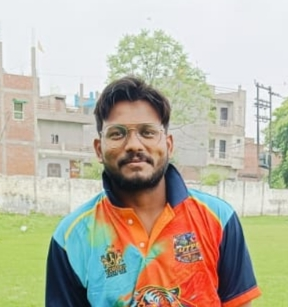

Together We Roar, Together We Win

Role : Pacer
Jersey No : 325
Batting : Right Hand Batsman
Bowling : Right Hand Fast Pacer
Sachin is a right-hand batsman and a right-hand fast pacer for CAWNPORE TIGERS XI. He is an aggressive pace bowler who attacks with the new ball and plays an important role in the team's bowling unit.
⬅ Back to HomeJersey
Role
Batting
Bowling